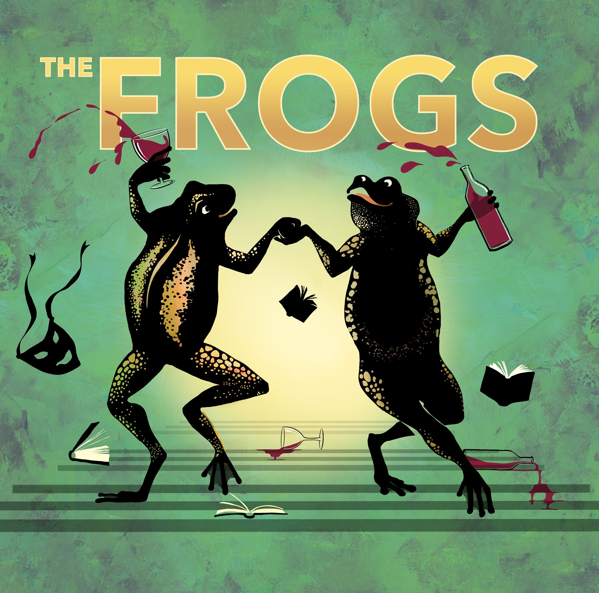

Coming Up
Jermyn Street Theatre
The Frogs Tue, 14th March - Sat, 8th April 2017
Director: Grace Wessels
Musical Director: Tim Sutton
Designer: Gregor Donnelly
Movement: Tim Mcrthur
From the same writers behind A Funny Thing Happened On The Way To The Forum, THE FROGS playfully explores the great challenges of human existence: confronting our fears, understanding life and death, and challenging the distractions that can prevent us from achieving our goals. This boisterously hilarious yet poignant musical follows Dionysos, Greek god of wine and drama, and his slave Xanthias on a journey to Hades to collect renowned critic and playwright George Bernard Shaw so that he may enlighten the easily misled and coerced masses of Earth. Along this journey, Dionysos and Xanthias meet Herakles, Charon, Pluto, and of course, the chorus of frogs. Then, Shakespeare shows up and starts declaiming his greatest hits; and before long he engages in a battle of words with Mr. Shaw. Who will win the honor of becoming reincarnated: The Bard or Bernard? THE FROGS stays true to its heritage, mixing Aristophanic pratfall satire with a Sondheim score that swings from witty to pretty to rambunctious, but also mirrors the Greek original for the serious issue of the role of the arts in a world beset by war and folly. Performed by arrangement with Music Theatre International (Europe) Limited
News
Michael Matus and George Rae to star in Stephen Sondheim's The Frogs at Jermyn Street Theatre from March 14. They will play Dionysos and Xanthias in the UK premiere of the latest Broadway version of the rarely performed musical, an hilarious send up of Greek comedy and satire, with a book revised and expanded by Nathan Lane.